Manual de usuario
QUORUM — Sistema de control de asistencia (SENA CPIC). Guía para administradores, coordinadores, instructores, gestores de grupo y aprendices.
Introducción
QUORUM digitaliza el registro y seguimiento de asistencia de aprendices vinculado a fichas de caracterización. Sustituye controles dispersos en papel o hojas de cálculo sueltas por una base centralizada, con roles (administrador, coordinador, instructor, gestor de grupo, aprendiz) y reglas aplicadas en el servidor.
Qué facilita en la práctica:
- Inicio de sesión único: correo, contraseña y verificación reCAPTCHA v3.
- Personal con verificación en dos pasos (2FA TOTP) cuando corresponde.
- Gestión de fichas, instructores, aprendices e importación desde Excel.
- Toma de asistencia, calendario de clases y consulta de evidencias de excusas.
- Historial / matriz por ficha y panel de coordinación.
- Generación de reporte Excel CPIC a partir de plantilla institucional.
- Catálogos SENA (macrorregiones, regionales, centros y programas con tipo de formación).
- Configuración, días festivos y auditoría de asistencia (según rol).
Primer acceso
-
Todos los roles usan la misma pantalla
/login: correo institucional, contraseña y reCAPTCHA. No hay pestañas separadas para staff y aprendiz. -
Personal (admin, coordinador, instructor, gestor): tras el login
puede solicitarse configurar o verificar 2FA (
/2fa/configurar,/2fa/verificar). Luego accede al dashboard y al menú según su rol. -
Aprendiz: usa el mismo formulario
/login(correo + contraseña). Tras iniciar sesión va a/mi-historial. No usa 2FA. El administrador debe asignarle contraseña en/usuarios; tras el seed de prueba el aprendiz viene sin contraseña en base de datos. -
Recuperación de contraseña (staff): enlace desde
/recuperar; el correo lleva a/resetpara definir una nueva contraseña. - Si la cuenta está inactiva o no tiene permiso sobre un módulo, el sistema muestra un mensaje o impide el acceso a esa pantalla.
Para credenciales de prueba y notas de entorno de desarrollo, consulta el manual técnico.
Pantallas de la aplicación
Resumen de rutas en el navegador (menú lateral según rol):
| Ruta | Quién la usa | Descripción |
|---|---|---|
/login |
Todos | Inicio de sesión (correo + contraseña + reCAPTCHA). |
/recuperar, /reset |
Staff | Recuperación de contraseña. |
/2fa/configurar, /2fa/verificar |
Staff | Configuración y verificación 2FA. |
/dashboard |
Staff | Panel principal por rol. |
/fichas, /fichas/nueva, /fichas/[id] |
Admin | Fichas de caracterización. |
/usuarios |
Admin | Gestión de usuarios. |
/admin/centros |
Admin | Centros de formación vinculados a una regional SENA (menú activo). |
/admin/programas |
Admin | Programas de formación con tipo (técnico, tecnólogo, operario, auxiliar, especialización, complementaria). |
/asistencia/tomar |
Instructor, gestor | Tomar asistencia del día. |
/asistencia/calendario |
Instructor, gestor | Calendario de clases / sesiones. |
/asistencia/historial |
Varios staff | Matriz de asistencia por ficha. |
/asistencia/auditoria |
Admin | Auditoría de registros de asistencia. |
/evidencias |
Coordinador, instructor, gestor | Evidencias de excusas. |
/coordinador |
Admin, coordinador | Panel de seguimiento académico. |
/mi-historial |
Aprendiz | Historial propio de asistencia. |
/configuracion |
Admin | Parámetros del sistema y días festivos. |
/perfil |
Todos (según acceso) | Perfil y cambio de contraseña. |
/centros-formacion |
— | Ruta legacy; el menú usa /admin/centros. |
Guía por pantalla
Capturas en assets/screenshots/ (ver LEEME.txt). Los pasos son
orientativos.
Inicio de sesión — /login
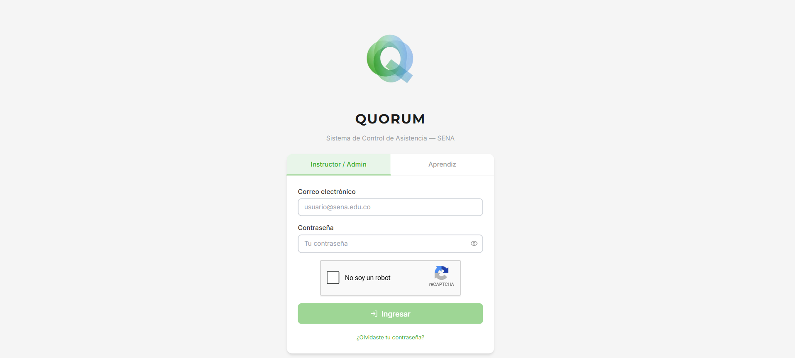
/login.- Abre la URL del frontend en el navegador.
- Ingresa correo y contraseña asignados por el administrador.
- Completa la verificación reCAPTCHA y envía el formulario.
- Staff: sigue el flujo 2FA si el sistema lo solicita. Aprendiz: va a Mi historial.
Recuperar y restablecer
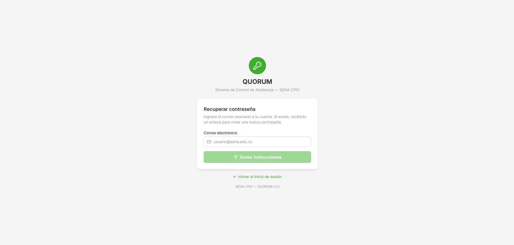
/recuperar.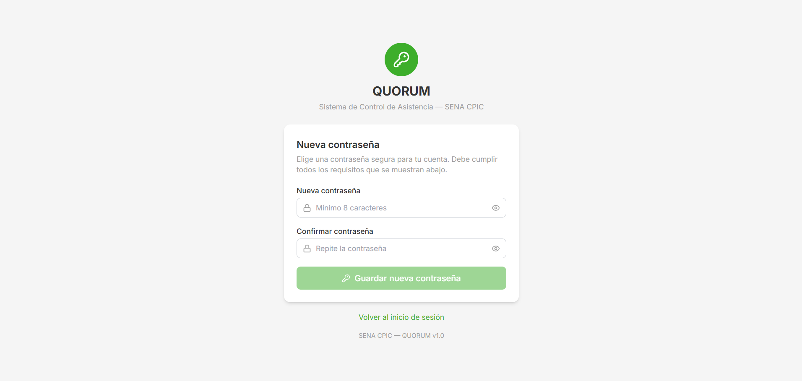
/reset.2FA
Configuración 2FA (04-2fa-configurar.png): opcional en
assets/screenshots/.
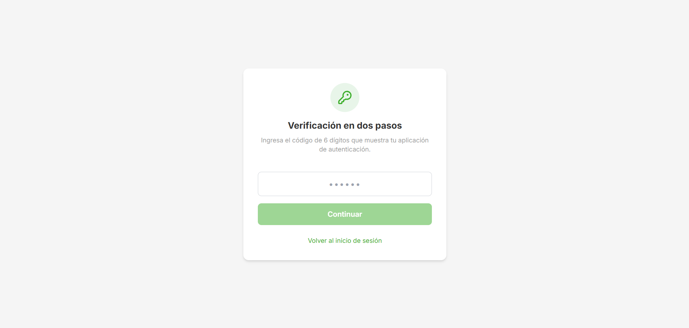
/2fa/verificar.Dashboard
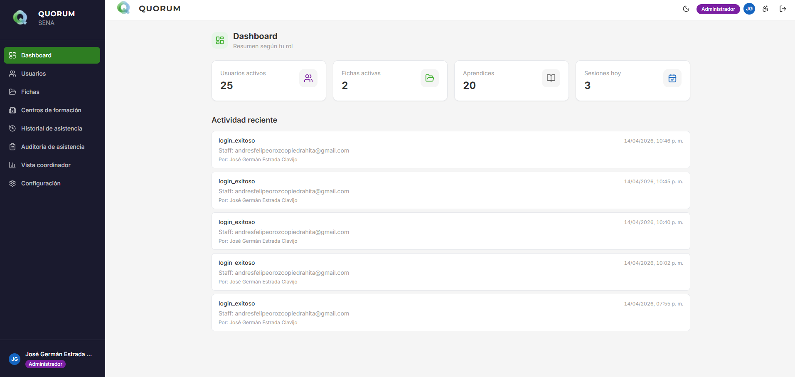
/dashboard.Fichas
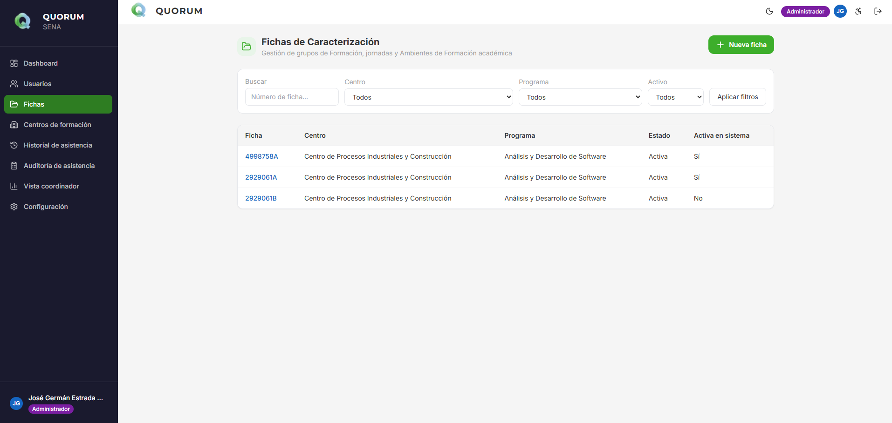
/fichas.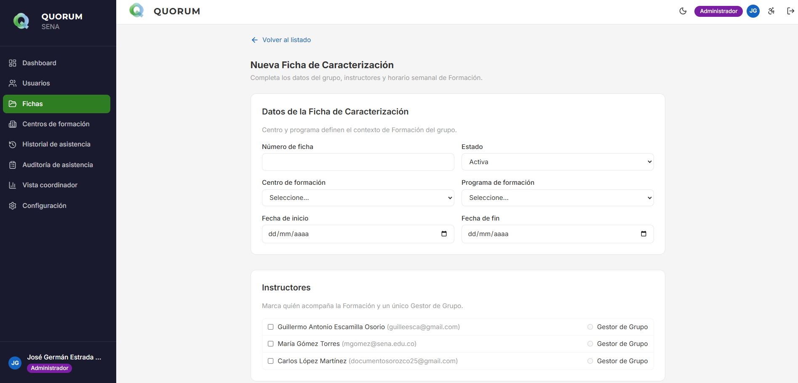
/fichas/nueva.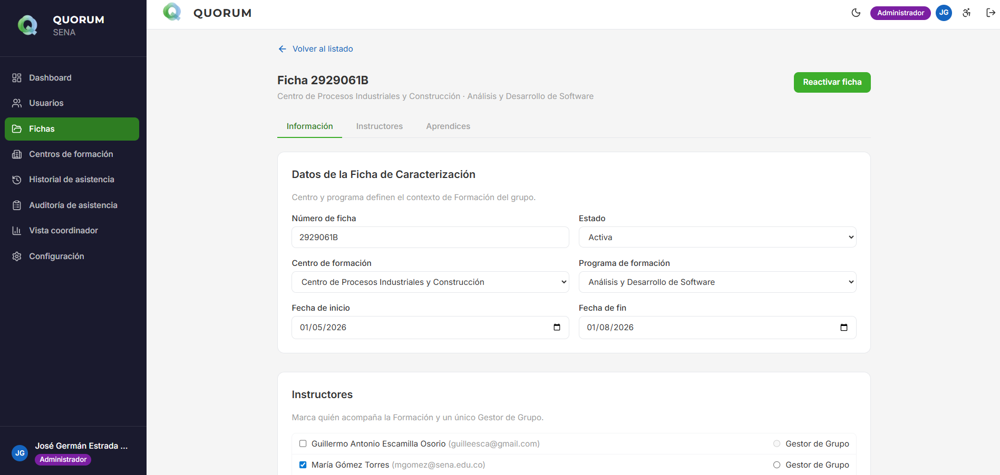
/fichas/[id].Usuarios
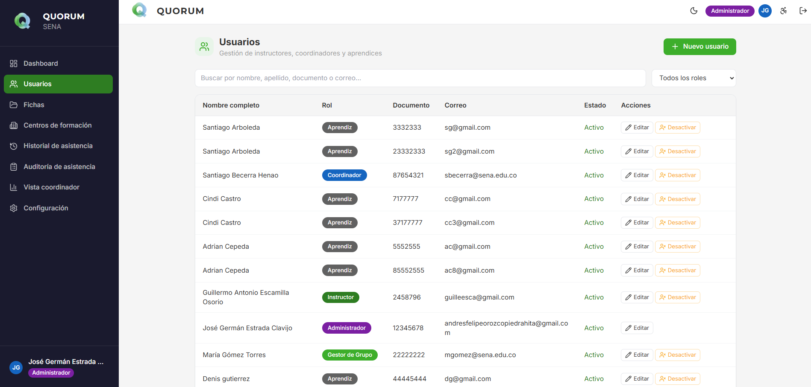
/usuarios.Asistencia
11-asistencia-tomar.png (tomar asistencia) y
19-calendario.png (calendario): opcionales en screenshots.
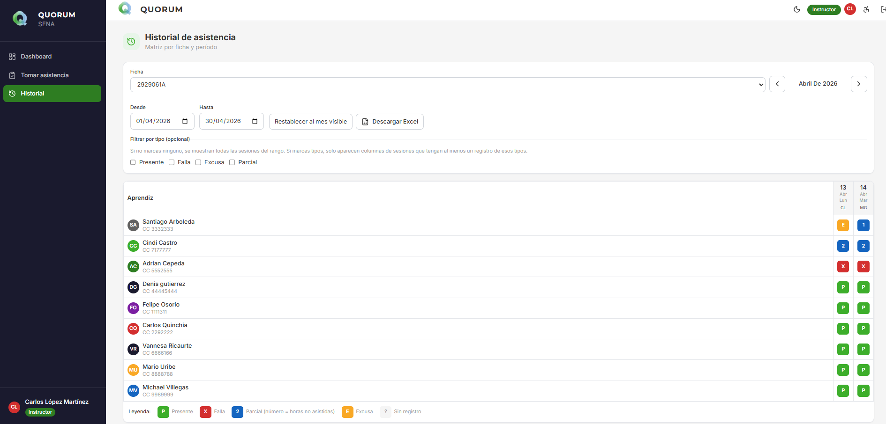
/asistencia/historial.
En /asistencia/tomar inicia o continúa la sesión del día, marca tipos de
asistencia y guarda. En /asistencia/calendario consulta las sesiones
programadas. En /evidencias revisa archivos de excusas cuando aplica.
Coordinador y auditoría
Auditoría (13-auditoria.png) y evidencias (20-evidencias.png):
capturas opcionales.
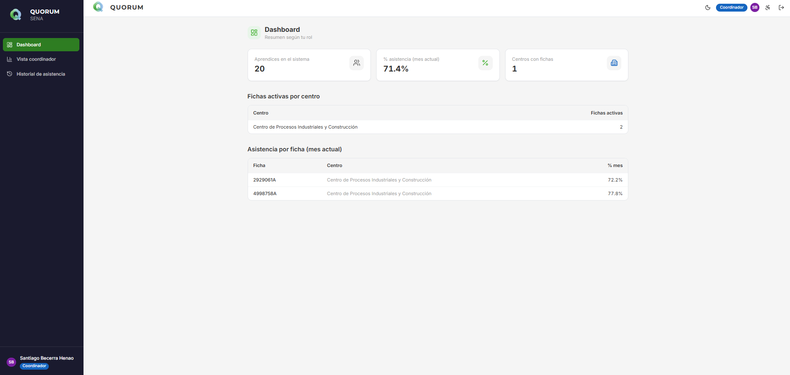
/coordinador.Aprendiz — Mi historial
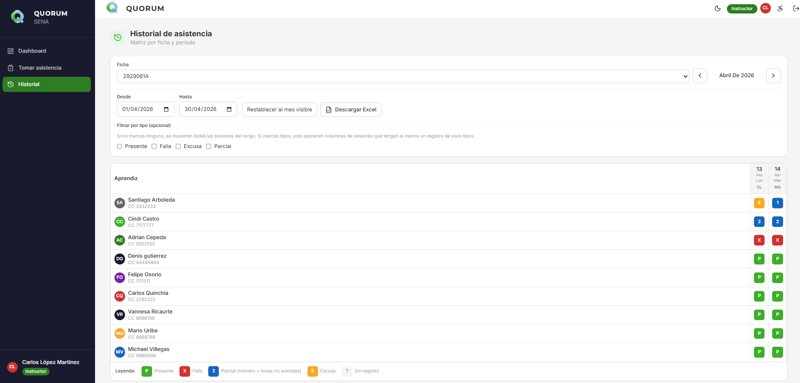
/mi-historial.Configuración y catálogos admin
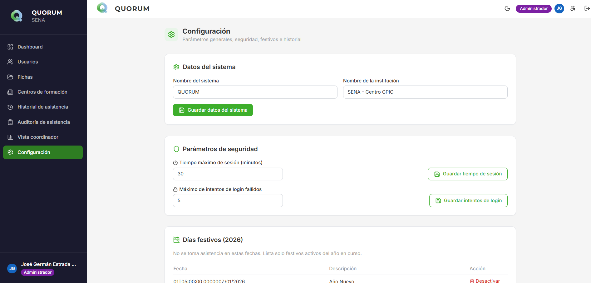
/configuracion.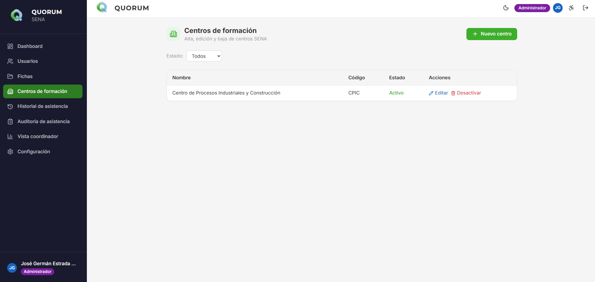
/admin/centros con selector de regional SENA).
Programas de formación: /admin/programas — captura opcional
21-admin-programas.png.
Perfil
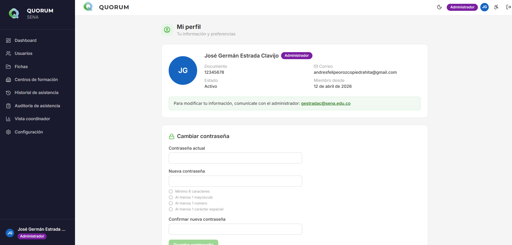
/perfil.Operación por rol
| Rol | Acciones típicas |
|---|---|
| Administrador |
Usuarios, fichas, centros y programas (/admin/*), configuración,
festivos, auditoría de asistencia, historial de actividad.
|
| Coordinador | Panel coordinador, búsqueda de aprendices, estadísticas, historial por ficha, evidencias; consulta sin mutaciones reservadas a admin. |
| Instructor / Gestor | Tomar asistencia, calendario, historial de fichas asignadas, evidencias, descarga Excel cuando la política lo permite. |
| Aprendiz | Solo /mi-historial y cambio de contraseña en perfil si aplica. |
El menú lateral (rail oscuro, expandible desde la barra superior) solo muestra lo permitido para tu rol. Etiquetas actuales:
- Admin: Dashboard, Usuarios, Fichas, Centros de formación, Programas de formación, Historial de asistencia, Auditoría de asistencia, Vista coordinador, Configuración.
- Coordinador: Dashboard, Vista coordinador, Historial de asistencia, Evidencias de excusas.
- Instructor / Gestor: Dashboard, Tomar asistencia, Mi calendario, Historial, Evidencias de excusas.
- Aprendiz: Mi historial, Mi perfil.
Funciones principales
| Área | Dónde en la app | Qué puedes hacer |
|---|---|---|
| Usuarios | /usuarios |
Crear, editar, desactivar y reactivar usuarios (admin). |
| Fichas | /fichas* |
Alta y edición de fichas; instructores; aprendices; importar Excel. |
| Asistencia | /asistencia/tomar |
Abrir sesión del día, registrar presente/falla/parcial/excusa, guardar. |
| Centros | /admin/centros |
Alta, edición y desactivación de centros; cada centro se asocia a una regional SENA (admin). |
| Programas | /admin/programas |
Catálogo de programas con código, nombre y tipo de formación; filtro por tipo y estado (admin). |
| Festivos | /configuracion |
Definir días no hábiles para el cómputo de asistencia. |
| Reporte Excel | Historial / detalle de ficha | Descargar formato CPIC (requiere plantilla en el servidor). |
Tipos de asistencia
Colores en la interfaz al marcar asistencia:
Presente Falla Parcial Excusa
Glosario
- Aprendiz: persona en formación en el SENA.
- Instructor: quien imparte la formación.
- Ficha de caracterización: grupo identificado por número de ficha.
- Ambiente de formación: espacio donde ocurre la formación.
Problemas frecuentes (uso)
- No puedo iniciar sesión: verifica correo y contraseña; si eres staff, completa 2FA. Contacta al administrador si la cuenta está inactiva.
- reCAPTCHA no deja continuar: en producción el administrador debe configurar las claves del sitio; en desarrollo ver el manual técnico.
-
No veo un menú o pantalla: tu rol puede no tener permiso; el
administrador asigna roles en
/usuarios. - No descarga el Excel: el administrador debe tener la plantilla CPIC en el servidor (ver manual técnico).
- Correo de recuperación no llega: revisa bandeja de spam o solicita al administrador que verifique el correo del sistema.
-
Aprendiz no puede entrar: el login unificado exige contraseña; pide al
administrador que te la asigne en
/usuarios(no uses documento en lugar de contraseña).
Conclusiones
QUORUM centraliza el registro de asistencia, la trazabilidad por ficha y la salida a Excel institucional. Este manual describe el uso desde la interfaz; para instalar el software o integrar con la API, usa el manual técnico.